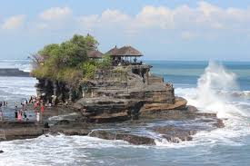
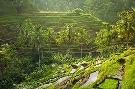
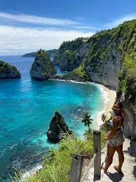

Pulau Dewata tidak hanya terkenal karena pantainya, tapi juga karena pesona budaya, tradisi, dan keindahan alam yang menakjubkan di setiap sudutnya.

Tabanan, Bali
Salah satu ikon wisata Bali yang berdiri megah di atas batu karang di tepi laut. Pemandangan matahari terbenam di Tanah Lot menjadi salah satu yang paling menakjubkan di dunia.
Lihat destinasi
Ubud, Gianyar
Terasering sawah yang indah di Ubud ini menjadi destinasi favorit para wisatawan yang ingin menikmati pemandangan hijau yang menenangkan serta budaya pertanian Bali yang autentik.
Lihat destinasi
Kabupaten Klungkung
Pulau kecil di tenggara Bali yang terkenal dengan pantai eksotis dan tebing dramatisnya. Kelingking Beach, Broken Beach, dan Crystal Bay menjadi spot foto yang wajib dikunjungi.
Lihat destinasiDari pantai berpasir putih hingga desa tradisional, Bali menawarkan keajaiban yang tiada habisnya. Mari rencanakan perjalanan impianmu sekarang juga!
Lihat Semua dari Bali